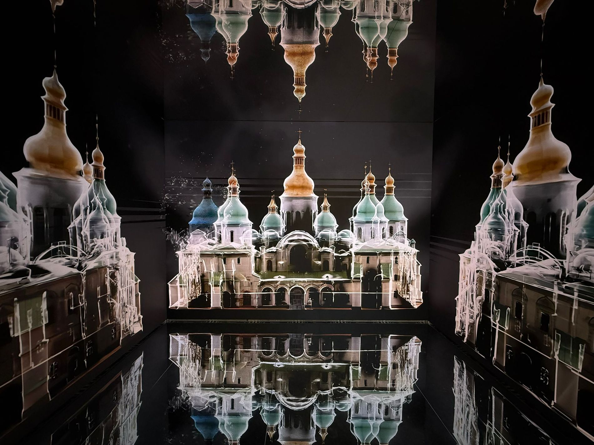
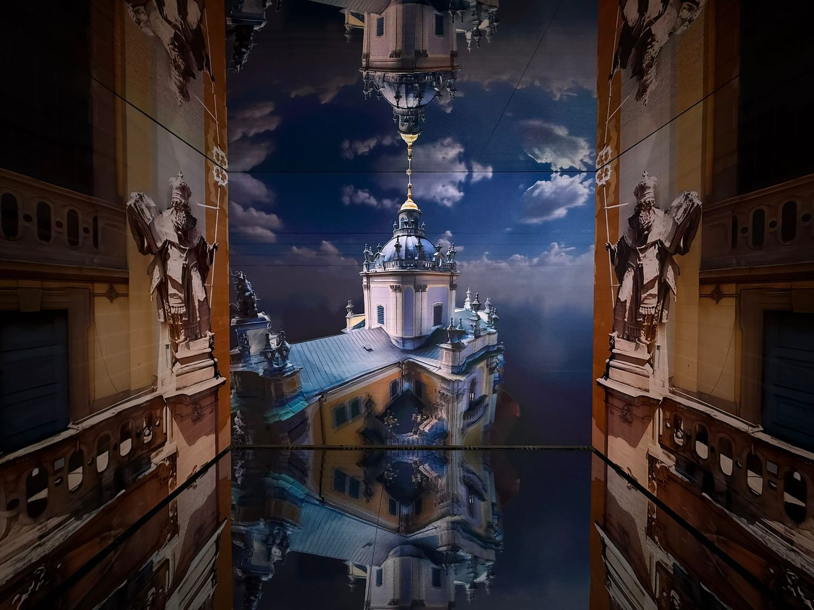
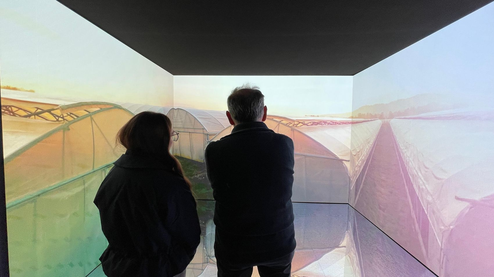
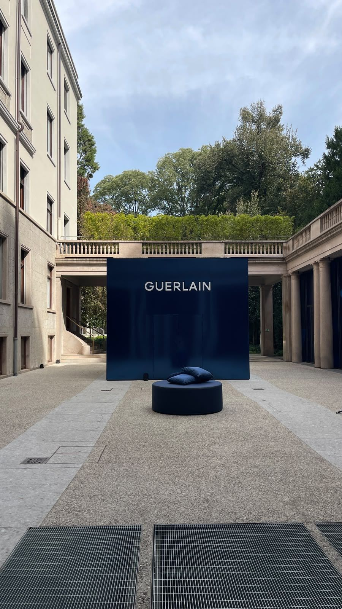
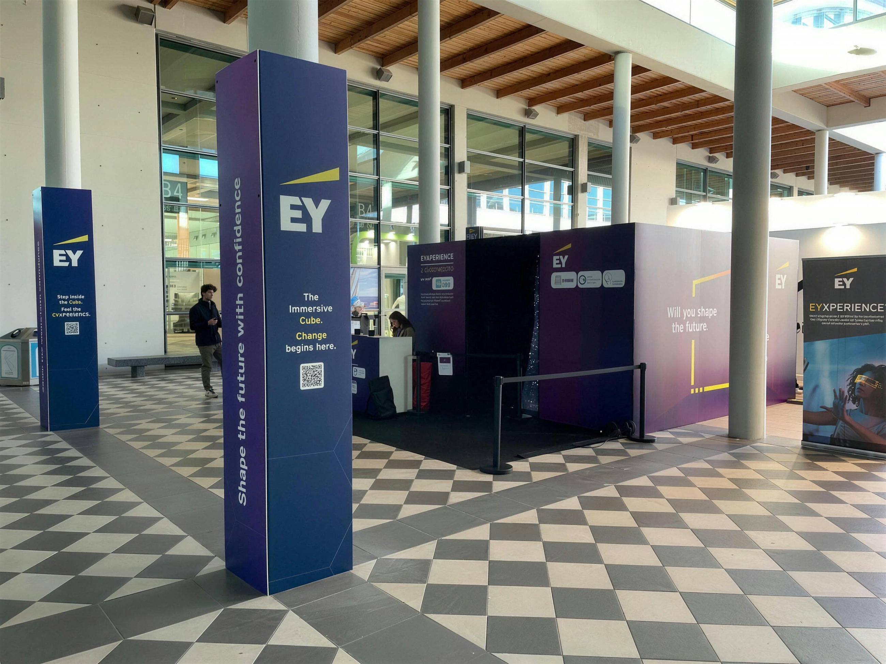
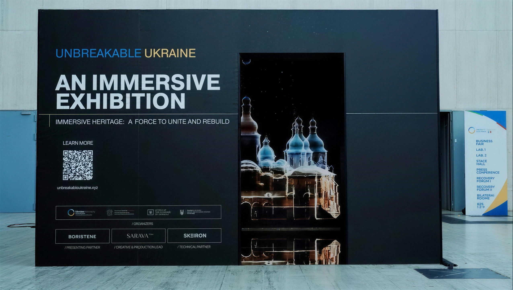
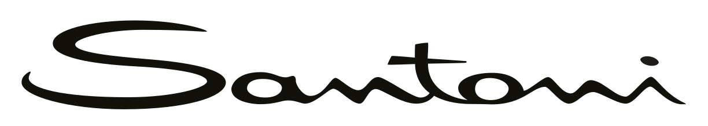
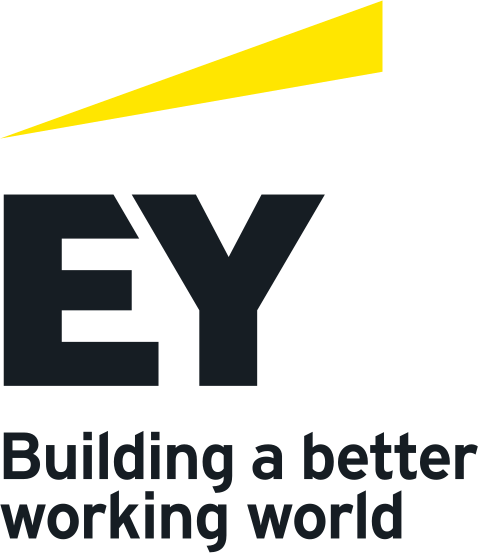
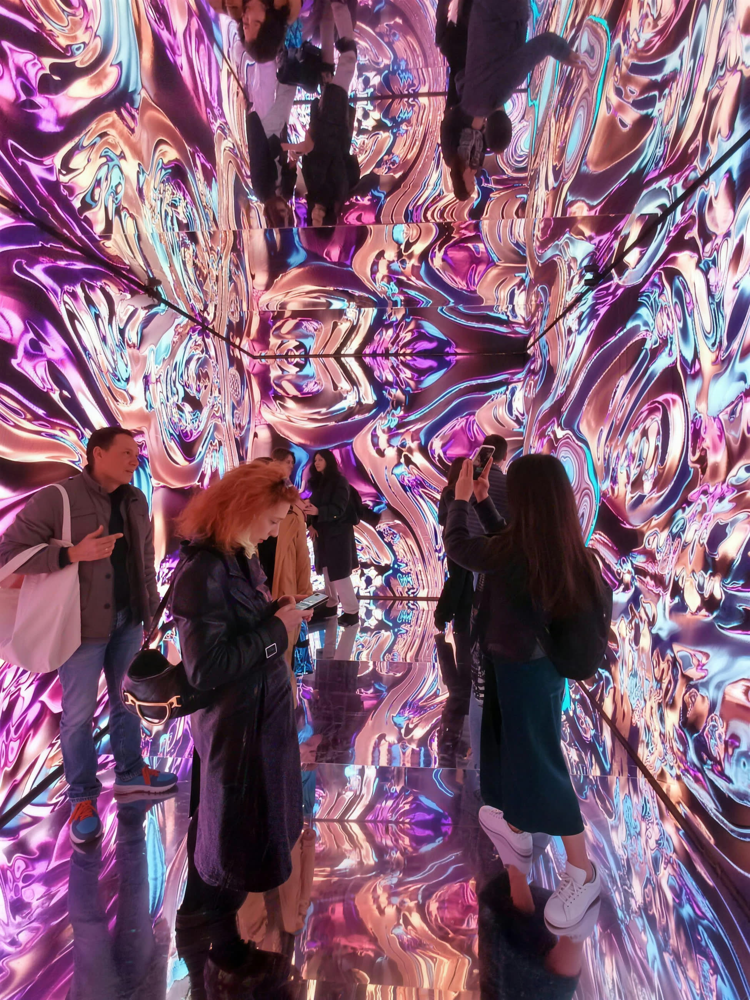

01BaseIl racconto
Il cubo acceso e il suo film. Si entra, parte, finisce, si esce. Nessun comando da imparare, nessuno steward da formare: il livello giusto quando quello che conta è il flusso di gente e il ricordo che se ne porta via.
Immersive room
Tre pareti LED a passo 1,5. Sotto e sopra, due specchi. Chi entra smette di guardare un'immagine e ci finisce dentro — e quando esce, quello che si porta via non è il video: è l'essere stato lì.
01 — Che cos'è
Ci sono due minuti, in una fiera o in un flagship, in cui una persona smette di scorrere il telefono e alza gli occhi. The Cube esiste per quei due minuti.
Si entra da una parete cieca e ci si ritrova chiusi dentro l'immagine: davanti, a sinistra, a destra. Sotto i piedi e sopra la testa ci sono due specchi, e la stanza smette di avere un fondo. Nessuno, la prima volta, guarda avanti: guardano tutti in basso.
Poi arriva il suono, che non viene da una cassa ma da intorno. Poi cambia l'aria, perché un'essenza entra insieme al video. Alla fine si esce, si cerca qualcuno e gli si dice sempre la stessa frase: «devi entrarci».
È lì che sta il ritorno. Un totem si guarda e si dimentica prima di girare l'angolo. Una stanza in cui sei stato dentro resta: nella testa di chi ci è entrato, e nel racconto che ne fa agli altri per settimane.
E non è un'installazione su misura da riprogettare ogni volta, con tre mesi di ingegnerizzazione e un rischio tutto tuo. È un prodotto: due formati, tre livelli di esperienza, un montaggio già provato, squadre che l'hanno già fatto.
Struttura, ledwall, specchi, audio, sensori, montaggio e presidio: Target Due. Concept, regia, produzione video, sound design e materiale social: Record Studio. Un solo referente, un solo preventivo, una sola persona da chiamare se alle sette di sera qualcosa non parte.

02 — Come è fatto
Modello tridimensionale ricostruito in codice, in scala reale sul formato Origin e sul modulo cabinet da 500 mm. È una rappresentazione dell'oggetto, non una ripresa: le fotografie vere sono più avanti.
Il volume percepito non è quello costruito.
I due specchi orizzontali si rimandano le tre pareti l'uno nell'altro, e la stanza si ripete verso l'alto e verso il basso finché la luce non si esaurisce. In pianta occupi dodici metri quadri — quelli che paghi di suolo in fiera. Quello che la gente racconta di aver visto è una cosa senza fondo.
03 — La differenza che nessuno scrive in offerta
Dentro un cubo la gente non sta a sei metri dallo schermo. Ci appoggia quasi il naso. È per questo che qui montiamo solo passo 1,5 e 1,9 millimetri.

04 — I due formati
Stessa anatomia, due taglie. La scelta si fa su due cose sole: quanto spazio c'è, e quante persone devono starci dentro insieme senza toccarsi.

Trascina per girare — affacciati e si accende
Tre metri e mezzo di lato, due e mezzo d'altezza. Sette cabinet in larghezza, cinque in altezza: il modulo da 500 torna esatto, senza un pannello tagliato.
La sagoma resta alta 175 cm e non cambia mai: cresce il cubo intorno. Passando a Grand si aggiunge una colonna di cabinet per lato e una fila sopra — da 105 pezzi a 162, stesso modulo, nessun pannello tagliato, un magazzino solo.
Origin — il formato che entra ovunque
Occupa quanto una sala riunioni piccola, e si infila dove c'è posto: stand di medie dimensioni, atrio direzionale, showroom, cortile. Non ti obbliga a ridisegnare l'allestimento intorno. A parità di effetto è la taglia che costa meno di suolo, e in fiera il suolo è l'unica voce che non si tratta.
Grand — il formato che ferma il padiglione
Un metro in più per lato e mezzo in più d'altezza non sono un aggiornamento: sono un'altra cosa. Si entra in gruppo, la parete di fondo passa sopra la testa, e gli specchi hanno finalmente la quota per andare a fondo davvero. È la taglia che in un padiglione si vede dall'ingresso e fa cambiare traiettoria alla gente.
05 — La pelle esterna
Le pareti esterne sono una superficie piena, alta due metri e mezzo, piantata in mezzo al passaggio. Non la lasciamo nera: si veste come vuoi tu.
Stampa diretta, vinile, laccatura a campione colore, tessuto teso, logo retroilluminato, materiali a specchio o effetto metallo — e, se il progetto lo chiede, LED anche fuori, così il cubo chiama da lontano e poi si apre.



Stesso oggetto, tre volte irriconoscibile. È la parte che i clienti sottovalutano al primo incontro e che diventa la prima cosa di cui parlano al secondo.
06 — Tre livelli di esperienza
Scelto il formato, resta una domanda sola: quanto deve rispondere. I tre livelli sono una progressione vera — ognuno contiene per intero quello sotto, e aggiunge un senso in più con cui il pubblico entra nel contenuto.
Il cubo acceso e il suo film. Si entra, parte, finisce, si esce. Nessun comando da imparare, nessuno steward da formare: il livello giusto quando quello che conta è il flusso di gente e il ricordo che se ne porta via.
Il cubo smette di essere uno schermo e diventa un ambiente. L'audio passa in surround e l'aria cambia: un vaporizzatore comandato in DMX porta dentro un'essenza, e l'essenza cambia insieme al video. Da iPad si decide cosa far vedere, sentire e respirare.
Qui il cubo risponde. Sensori e un sistema di intelligenza artificiale con cui si parla a voce; un prodotto fisico appoggiato dentro diventa un comando. L'ospite smette di essere pubblico e comincia a condurre: gli stai lasciando la regia per due minuti.
| 01 · Base | 02 · Medio | 03 · Pro | |
|---|---|---|---|
| Cubo LED passo 1,5 / 1,9 | ● | ● | ● |
| Pelle esterna personalizzata | ● | ● | ● |
| Audio | Stereo | Surround | Surround |
| Lancio contenuti da iPad | ● | ● | ● |
| Essenze comandate in DMX | — | ● | ● |
| Regia dei contenuti in tempo reale | — | da iPad | da iPad e a voce |
| Sistema IA conversazionale | — | — | ● |
| Prodotto fisico come comando | — | — | ● |
| LED reattivo (TouchDesigner) | — | — | opzione |
| Video prodotti | 1 × 90–120″ | loop + 2 × 120″ | loop + 4 × 120″ |
| Reel e materiale social | ● | ● | ● |
Il contenuto giusto non riempie le tre pareti. Le usa.
07 — I contenuti
Qui non arriva un video di repertorio con il logo appiccicato in coda. Si parte da quello che hai in testa — il prodotto che stai lanciando, la campagna in corso, l'archivio che nessuno ha mai digitalizzato — e da lì si scrive, si gira e si monta.
Il contenuto lo firma Record Studio, che di mestiere fa esattamente questo: designing, capturing and telling emotions. Quattro registri, uno per ogni modo in cui una marca può usare due minuti di attenzione indivisa.
Lo spot. Ritmo, prodotto, chiusura. È il registro in cui il cubo fa da sala di proiezione privata: due minuti e la persona esce con il film addosso.
Il contenuto nasce dentro la campagna che hai già in corso: stessa direzione artistica, stesso casting, stessa luce. Il cubo diventa il posto in cui la campagna si attraversa invece di guardarla.
Il racconto lungo: un'azienda, un archivio, un processo produttivo, una storia di famiglia. È il registro dei musei d'impresa e delle mostre — quello che a Roma ha retto una conferenza internazionale.
I verticali e i reel, girati nello stesso set e nella stessa giornata. Non una seconda produzione: una seconda uscita dello stesso materiale.
Come si scrive
Si parte da una cosa sola che deve restare in testa a chi esce. Intorno a quella si costruisce: sceneggiatura, casting, scelta delle location, direzione della fotografia. La scrittura tiene conto del fatto che lo spettatore non può distogliere lo sguardo — non c'è una cornice da cui uscire, e questo cambia la durata delle inquadrature.
Come si gira
Fotografia cinematografica, non ripresa d'evento: ottiche, luce costruita, movimenti macchina progettati per il volume. Al montaggio si lavora sulla striscia intera, non sul rettangolo, e il sound design nasce insieme all'immagine perché dentro il cubo arriva da tutte le direzioni.
Cosa resta a te
Il master per il cubo, i verticali per i social, gli still per la stampa. Consegnati, riutilizzabili, tuoi anche dopo. La libreria si aggiorna nel corso del contratto: a ogni collezione, a ogni stagione, a ogni campagna.
Chi lo gira
Tiffany & Co al Festival di Venezia, Hermès, Versace, Villa d'Este, i settant'anni di Pianca. È la troupe che entra nel cubo: stessa regia, stessa luce, stesso montaggio. Quello che gira sulle tre pareti non è un filmato di repertorio con il logo in coda.
Chi ci ha già chiamati


Lavori realizzati da Target Due o da Record Studio, anche in ambiti diversi da The Cube. L'elenco è parziale.
08 — Non è un render
Le immagini di questa pagina sono fotografie e riprese di installazioni reali, non simulazioni. È la ragione per cui le mostriamo: l'effetto specchio in un rendering viene sempre benissimo, e dal vero quasi mai — a meno di averlo già fatto. I primi quattro sono cubi. L'ultimo è la sala da cui il cubo è nato.
Elettroexpo, Pordenone — settembre 2026
Un distributore di materiale elettrico che a una fiera di settore deve vendere una cosa che non si può mettere in vetrina: la luce. Il cubo l'ha resa un viaggio — sopra una città di notte dalla cabina di un aereo, in orbita, sott'acqua, fra le piramidi e dentro il Colosseo — con una frase sola a tenere il filo: «when the world moves, light moves with it».
È il caso che dimostra il formato fuori dal lusso e fuori dalla cultura: un pubblico tecnico, in una fiera di settore, che resta fermo due minuti dentro una scatola a guardare la luce.
La Nuvola, Roma — luglio 2025
La mostra immersiva allestita dentro la conferenza internazionale per la ricostruzione: chiese, navate e palazzi ucraini rilevati in 3D, prima com'erano e poi come sono adesso. Visitata dalle delegazioni ufficiali.
È il lavoro che dimostra che il formato regge un contenuto serio: in un contesto istituzionale ha fatto il mestiere del museo.
Ecomondo, Rimini — novembre 2025
Cubo all'ingresso dello spazio in fiera, ingressi a turni e coda gestita da hostess. Dentro, tre minuti su dati, tracciabilità e intelligenza artificiale, in loop dall'apertura alla chiusura dei padiglioni.
Il caso d'uso fieristico puro: in quattro giorni il ciclo si ripete qualche centinaio di volte, e ogni giro è un contatto che resta in piedi due minuti invece di passare oltre.
Cortile di palazzo, Milano — settembre 2026
Serata di presentazione all'aperto, colonnato intorno e ospiti in piedi. Il cubo ha fatto il mestiere opposto a quello della fiera: non attirare folla, ma ritagliare per il marchio una stanza propria dentro un evento affollato.
È anche la prova della versione outdoor, in un cortile storico dove non si fora niente: tutto a zavorra, montato nel pomeriggio e smontato nella notte.

Galleria del Corso, Milano — 2025
Una galleria storica milanese chiusa e rivestita di LED su tutti i lati, soffitto compreso, con pavimento a specchio e contenuto generativo che non si ripete mai uguale. Non è The Cube: è la versione senza limiti di budget, e il lavoro da cui abbiamo capito che cosa rende davvero l'effetto.
Non sono i metri quadri. È la chiusura del campo visivo, il passo fine e la coppia di specchi. Tolte quelle tre cose, resta uno schermo grande. Messe insieme in dodici metri quadri, resta The Cube.
09 — Come si prende
The Cube nasce a noleggio, perché è così che si usa davvero: una fiera, un lancio, una stagione di showroom.
Nessuno immobilizza capitale per una cosa che deve ancora dimostrare quanto vale. Ma chi se lo tiene addosso per un anno, di solito, non lo rende — e allora è giusto che i canoni già pagati valgano qualcosa il giorno in cui decide di tenerselo.
A giornata o per la durata della manifestazione. Trasporto, montaggio, taratura, presidio tecnico nei giorni di apertura e smontaggio: tutto dentro.
Il cubo resta dov'è — showroom, flagship, atrio, museo d'impresa — con un canone mensile. I contenuti si rinnovano a ogni collezione, stagione, campagna.
Alla scadenza il contratto si rinnova a condizioni migliori: l'impianto è già montato e collaudato, resta il servizio sui contenuti e la manutenzione.
Chi vuole tenerlo lo riscatta, e parte di quanto già versato si scala dal prezzo. Si decide alla fine, con l'impianto in funzione sotto gli occhi — non all'inizio, sulla fiducia.
Canoni, durata del presidio e quota di riscatto si definiscono in offerta, sul formato scelto, sul livello di esperienza e sulla durata. Sopralluogo e verifica dei vincoli di sede — altezza libera, potenza disponibile, accesso mezzi — prima di qualunque numero.
10 — Chi risponde
Fino a ieri una cosa così si comprava a pezzi: la tecnologia da uno, il film da un altro, e nessuno dei due che rispondesse del risultato finale.
The Cube arriva sullo stesso camion. Un preventivo solo, un referente solo, una persona sola da chiamare se alle sette di sera qualcosa non parte.
Porta la stanza. Struttura e ledwall, i due specchi, la pelle esterna, l'impianto audio, la sensoristica, il trasporto e il montaggio, la taratura, il presidio tecnico nei giorni di apertura e la manutenzione.
Porta quello che ci gira dentro. Concept e sceneggiatura, regia, fotografia, produzione video sul volume, sound design, i contenuti per i social e l'aggiornamento della libreria stagione dopo stagione.
La parte difficile di una cosa così non è l'idea. È portarla in un padiglione alle sei del mattino, farla accendere al primo colpo, tenerla in piedi quattro giorni di fila con ventimila persone che passano, e smontarla nella notte senza lasciare un graffio sul marmo di un cortile del Seicento. È lì che il cubo smette di essere un rendering.
Parliamone
Servono tre informazioni per arrivare a un numero: dove va, per quanto tempo, e fin dove deve rispondere. Il resto lo verifichiamo noi, in sopralluogo.
Poi succede una cosa sola, e succede sempre: la prima persona che esce va a chiamare qualcun altro.